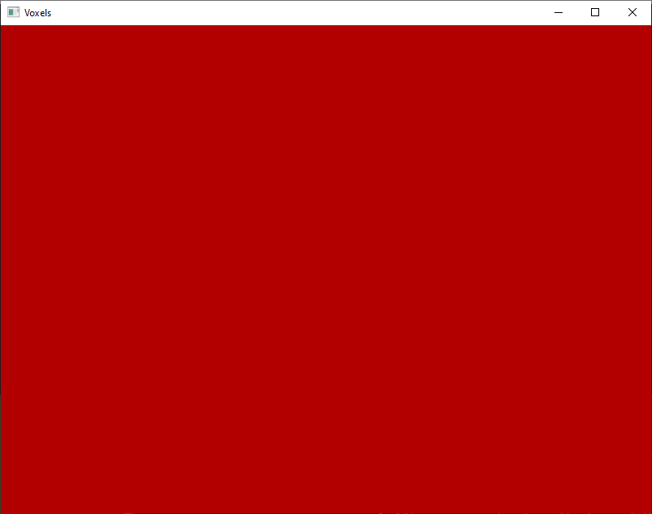

Before we move on, you've got MinGW-w64, GLFW, GLEW, GLM, and LodePNG all installed on your C: drive, right? And you placed libgcc_
Let's create a main.cpp file in the project folder real quick:
#include "App.h"
int main()
{
App* app = new App(800, 600);
app->start();
delete app;
return 0;
}It's nice not to have a disorganized mess in the main source file. Better to have a disorganized mess in a dedicated class, no? Here we're imagining that we have a class called App containing all our application functionality. This class is then instantiated with a width and height, launched, and deleted upon completion.
Create the file App.h in your project folder. Let's begin with a basic class outline like so:
#ifndef APP_H
#define APP_H
#define GLFW_DLL
#include <GLFW/glfw3.h>
#include <iostream>
class App {
public:
App(int width, int height);
virtual ~App();
void start();
private:
void update(float delta);
GLFWwindow* window;
int width;
int height;
float aspect;
};
#endifWe've defined GLFW_DLL before including the GLFW header because we're using the shared library; this is quite necessary. So far we've only declared two class methods: start() and update(). start() will be responsible for initializing our libraries, opening a window, and running the main loop. update() is a private method that will be called in every iteration of the main loop to update the application state before the rendering stage. Finally, we declare private member variables to hold a pointer to a GLFWwindow instance, the window dimensions, and window aspect ratio.
Side note: I like to make all destructors virtual because deleting an object in the form of its superclass pointer will not call the subclass's destructor. Making a destructor virtual guarantees it can be overridden in a polymorphic way.
Let's flesh out this class a bit and define all its functions in a new file App.cpp:
#include "App.h"
App::App(int width, int height)
: width(width), height(height),
aspect(static_cast<float>(width) / static_cast<float>(height)) {
}
App::~App() {
}
void App::start() {
if (!glfwInit()) {
std::cout << "Could not initialize GLFW!" << std::endl;
}
window = glfwCreateWindow(width, height, "Voxels", nullptr, nullptr);
if (!window) {
std::cout << "Could not open a GLFW window!" << std::endl;
glfwTerminate();
}
glfwMakeContextCurrent(window);
glfwSwapInterval(0);
double startTime = glfwGetTime();
while (!glfwWindowShouldClose(window)) {
const double endTime = glfwGetTime();
const float delta = static_cast<float>(endTime - startTime);
startTime = endTime;
update(delta);
glClearColor(0.7f, 0.0f, 0.0f, 1.0f);
glClear(GL_COLOR_BUFFER_BIT);
glfwSwapBuffers(window);
glfwPollEvents();
}
glfwDestroyWindow(window);
glfwTerminate();
}
void App::update(float delta) {
}In the App constructor, we initialize the width, height, and aspect class variables using a member initializer list. I'm going to try and retain the habit of using static_cast where appropriate instead of C-style casts or implicit casts. For simplicity, I'll make exceptions when calling OpenGL functions.
I don't know about you, but I don't care for proper error handling, so we're just going to print a simple message when something fails. We first initialize GLFW and create a window with the title "Voxels", before calling glfwMakeContextCurrent() on our window. We're only using one window, so we call this function once, but an application with multiple windows would require switching OpenGL contexts more frequently. We then set the swap interval to 0 to allow for the maximum framerate possible, without considering VSync.
I get the feeling you've created a game loop before, but let's walk through it anyway. The following loop iterates while the current window is open, and we calculate the time difference between frames as a floating point number representing the number of seconds that have passed, delta. We pass delta to the update() function, which will update the application state (e.g. camera position) based on how much time has passed in the previous frame. We then invoke OpenGL functions to clear the color buffer to a medium red before instructing GLFW to show the rendered frame and polling for new window/input events.
Well, it's not going to compile itself! To make our code easier to compile in the future, let's create a very simple batch file to invoke the compiler on our source files. Create and open the file build.bat in your text editor. Enter these commands:
g++ -O3 -o App -I"C:/glfw-3.3.6/include" -I"C:/glew-2.1.0/include" -I"C:/lodepng/include" -I"C:/glm" -L"C:/glfw-3.3.6/lib" -L"C:/glew-2.1.0/lib" main.cpp App.cpp "C:/lodepng/object/lodepng.o" -lglfw3dll -lglew32 -lglew32.dll -lopengl32 -lgdi32
pauseNotice the only source files listed in the first command are main.cpp and App.cpp. The first -O3 flag hints at the compiler to maximally optimize the resulting machine code. The -o App ensures that we get an executable named App.exe. The -I and -L flags tell the compiler where to find include and library directories. You can see that at the end, we link each of the compiled library files from GLFW and GLEW, as well as -lopengl32. Finally, notice that we link the precompiled LodePNG object file from earlier.
You can just double click your new build.bat file to execute it, and after a few seconds our App.exe executable appears. This is what you should see upon running the compiled application:
Et voilà! Not bad right? Click 'Next' to start learning about noise! I think we've earned a break from OpenGL and windowing.